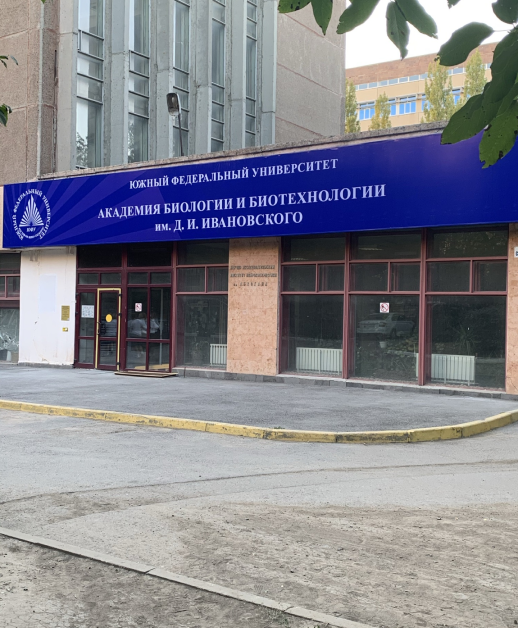

Контактные данные
Кафедра почвоведения и оценки земельных ресурсов Академии биологии и биотехнологии им. Д. И. Ивановского Южного федерального университета.
Россия, Ростовская область, город Ростов-на-Дону, пр. Стачки, 194 корпус 1, ауд: 107. 310. время работы: пн, вт, Ср. чт, пт 8:00-17:00, сб 8:00-15:00
Тел.: +8 (863)243-30-94
Email: minkina@sfedu.ru, migovad@sfedu.ru
